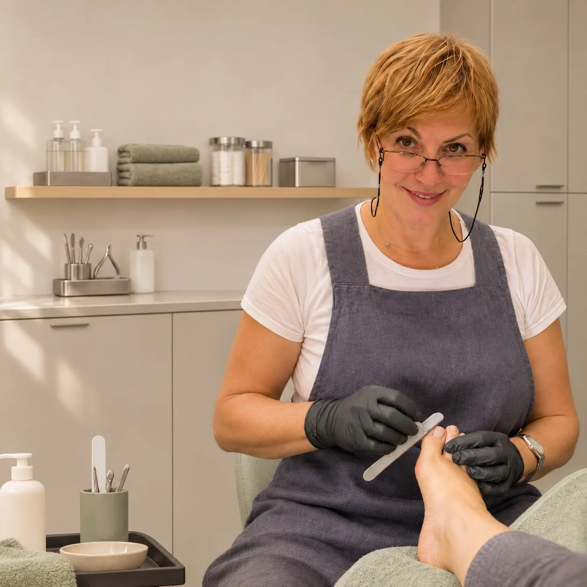
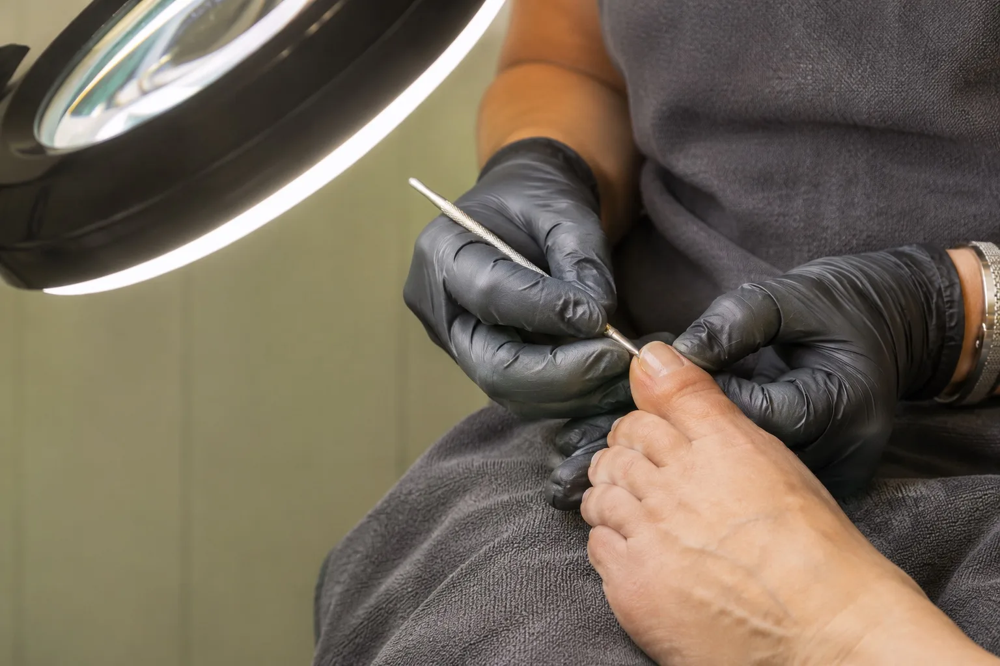

Fußpflege in 1010 Wien
Fußpflege in
1010 Wien
13 Jahre Erfahrung. Sorgfältige Pediküre, auch bei eingewachsenen Nägeln und Hühneraugen.
Pediküre ab 50 €
Brandstätte 3/1 St/6, 1010 Wien
Auch bei Ihnen zu Hause: ab 65 €
Der Preis richtet sich nach der Entfernung.
Ihre Fußpflegerin
Gute Pflege braucht Erfahrung. Und jemanden, der Ihnen zuhört.
Lilly Rout ist diplomierte Fußpflegerin mit 13 Jahren Erfahrung. Sie nimmt sich Zeit für Ihre Wünsche und für Füße, die besondere Aufmerksamkeit brauchen.
Ob regelmäßige Pediküre, natürliche Nagelpflege oder eine Maniküre mit Farbe: Wir besprechen gemeinsam, welche Pflege zu Ihnen passt.
Lilly persönlich kontaktieren
13 Jahre Erfahrung in der Fußpflege.
Hintergrund digital gestaltet.
Sorgfaltim Detail
Fußpflege bei besonderen Bedürfnissen
Fußpflege für
besondere Bedürfnisse
Neben klassischer Pediküre bietet Lilly gezielte Fußpflege an, etwa bei empfindlichen Füßen, eingewachsenen Nägeln oder Hühneraugen. Bitte sprechen Sie Besonderheiten vor dem Termin an.
Bei Schmerzen, Entzündungen oder unklaren Veränderungen wenden Sie sich bitte an eine Ärztin oder einen Arzt. Fußpflege ersetzt keine medizinische Behandlung. Das Foto ist eine illustrative Darstellung.
Behandlungen
& Preise
Pediküre, Fußpflege und Maniküre im Wiener Zentrum.
Wählen Sie Ihre Behandlung in Ruhe aus.
Pediküre
Pflege für Füße und Nägel.
| Behandlung | Preis |
|---|---|
| Pediküre mit Skalpell und Fräser 45 Minuten | 50 € |
| Pediküre mit Farbe | 55 € |
| Pediküre mit Shellac | 65 € |
| Japanische Pediküre | 60 € |
| Mehrzeit-Pediküre, auch für Diabetiker | 60 € |
| Mehrzeit-Pediküre mit Shellac inklusive Entfernen | 75 € |
| Beauty Fresh-up für die Füße | 30 € |
| Beauty Fresh-up mit Nagellack | 35 € |
| Beauty Fresh-up mit Shellac | 45 € |
| Fußmassage 30 Minuten | 35 € |
| Nagelspange | 35–45 € |
| Eingewachsene Zehennägel | 15 € |
| Hühnerauge entfernen | 15 € |
| Shellac entfernen nicht eigener Shellac | 10 € |
Maniküre
Natürlich schön. Bis ins Detail.
| Behandlung | Preis |
|---|---|
| Klassische Maniküre | 35 € |
| Maniküre mit Farbe | 42 € |
| Maniküre mit Shellac inklusive Entfernen | 55 € |
| Japanische Maniküre | 45 € |
| Handmassage mit Handpeeling 20 Minuten | 25 € |
| Shellac entfernen | 10 € |
Mobile Fußpflege
in Wien
Mobile Pediküre ab 65 €. Der endgültige Preis richtet sich nach der Entfernung. Bitte fragen Sie nach Verfügbarkeit und Einsatzgebiet.
+43 660 7290640Per E-Mail anfragenAlle Preise in Euro. Bitte bestätigen Sie den aktuellen Preis bei der Terminvereinbarung.
Ihr Termin
bei Lilly
Rufen Sie an oder schreiben Sie Lilly. Sie müssen Ihre Behandlung nicht vorab auswählen. Wir besprechen gemeinsam, welche Pflege zu Ihnen passt.
Brandstätte 3/1 St/6
1010 Wien
Persönlich anfragen
Anrufen: +43 660 7290640Per E-Mail anfragenBehandlung auswählen (optional)
Wir beraten Sie gerne.
Eine Vorauswahl ist nicht nötig.
Die E-Mail-Schaltfläche öffnet Ihr E-Mail-Programm. Ein Termin ist erst nach persönlicher Bestätigung vereinbart.
Kein E-Mail-Programm eingerichtet?
Fragen zur Fußpflege
in Wien
Wo findet die Fußpflege statt? Lilly Rout empfängt Sie in der Brandstätte 3/1 St/6, 1010 Wien, im 1. Bezirk. Termine werden persönlich vereinbart. Alternativ können Sie einen Hausbesuch anfragen.
Was kostet eine Pediküre in 1010 Wien? Die Pediküre mit Skalpell und Fräser kostet 50 € für 45 Minuten. Mehrzeit-Pediküre ist mit 60 € angegeben, mobile Pediküre ab 65 € je nach Entfernung. Alle weiteren Leistungen finden Sie unter Behandlungen und Preise.
Ist Pediküre ohne Lack möglich? Ja. Sie können sich für die Pflege Ihrer Füße und Nägel ohne Farblack oder Shellac entscheiden.
Welche Behandlung passt zu mir? Sie müssen sich nicht vorab festlegen. Schildern Sie Ihre Wünsche bei der Terminvereinbarung, damit wir die passende Pflege besprechen können.
Ist ein Hausbesuch möglich? Ja, mobile Pediküre ist ab 65 € möglich. Der endgültige Preis hängt von der Entfernung ab; bitte fragen Sie nach Verfügbarkeit und Einsatzgebiet.
Wie lange dauert eine Behandlung? Die Pediküre mit Skalpell und Fräser ist mit 45 Minuten angegeben. Für andere Behandlungen stimmen wir den Zeitbedarf persönlich ab.
Was sollte ich vorab mitteilen? Informieren Sie Lilly bitte persönlich über Besonderheiten oder Empfindlichkeiten, die bei Ihrer Pflege berücksichtigt werden sollen.
Wie vereinbare ich meinen Termin? Rufen Sie unter +43 660 7290640 an oder schreiben Sie an routliliya@gmail.com. Ihr Termin wird persönlich bestätigt.
Ich freue mich
auf Sie
Persönliche Fußpflege und Maniküre.
Termine nach Vereinbarung.
Mobile Pediküre ab 65 €; der Preis hängt von der Entfernung ab.
Brandstätte 3/1 St/6 · 1010 Wien
1. Bezirk · Innere Stadt